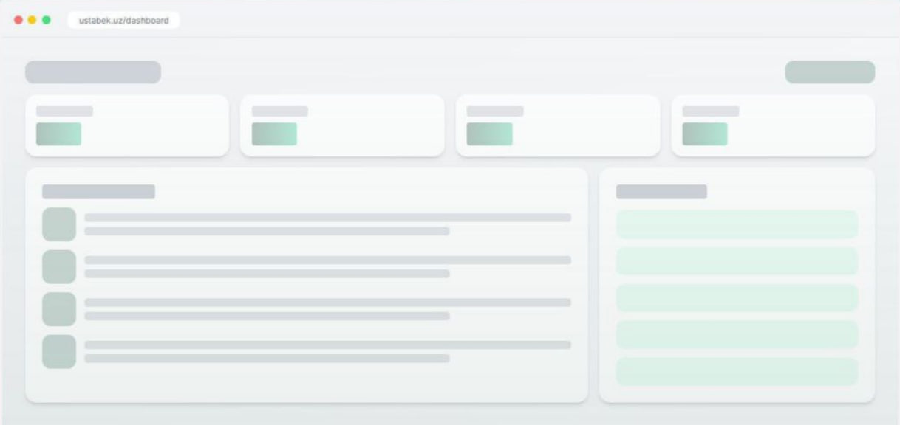
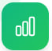

⚙️ Loyihalarni boshqarishning yangi avlodi
Isitish tizimi hisob-kitoblari, mijozlar va loyihalarni boshqarish bitta kuchli platformada
✓ 100% bepul ✓ Karta talab qilinmaydi ✓ Barcha funksiyalarga to‘liq kirish
Vaqt tejash
Hisoblash aniqligi
Mavjudlik
UstaBek — bu qurilish sohasidagi professional ustalar uchun maxsus ishlab
chiqilgan kuchli veb-platforma. U isitish tizimlarini hisoblash,
mijozlarni
boshqarish, loyihalarni kuzatish va moliyaviy hisob-kitoblarni
bir joyda
osonlashtiradi.
Siz xonalar maydonini kiritasiz, tizim esa avtomatik ravishda kerakli materiallarni hisoblaydi.
Isitish ustalari, brigadalar va qurilish kompaniyalari uchun.
Hisob-kitob vaqtini keskin qisqartiradi va xatolarni kamaytiradi.
Qurilish professionalari uchun maxsus yaratilgan intuitiv interfeys

UstaBek qurilish loyihalarini boshqarishning barcha jihatlarini birlashtiradi
Xonalar maydoniga asoslangan isitish tizimi materiallari uchun avtomatik hisob-kitob
Barcha obyektlar va spesifikatsiyalarni bir joyda qulay boshqarish
Mijozlar ma’lumotlari va loyiha tarixini yagona tizimda saqlang
Har bir loyiha bo‘yicha to‘lovlarni bosqichma-bosqich kuzating
Loyihalarni ustuvorliklar va bildirishnomalar bilan boshqaring

Mijozlar uchun professional ikki tilli hisobotlar yaratish
30 soniyada hisob qaydnomasini yarating va bepul to‘liq kirishga ega bo‘ling
Bepul boshlashAllaqachon hisobingiz bormi? Kirish